Workflow

Ross Bennett
May 16, 2014
"Modern" Portfolio Theory (MPT) was introduced by Harry Markowitz in 1952.
In general, MPT states that an investor's objective is to maximize portfolio expected return for a given amount of risk.
General Objectives
How do we define risk? What about more complex objectives?
PortfolioAnalytics is an R package designed to provide numerical solutions and visualizations for portfolio optimization problems with complex constraints and objectives.
Linear and Quadratic Programming Solvers
Global (stochastic or continuous solvers)
PortfolioAnalytics has three methods to generate random portfolios.
gridSearch function in the NMOF package.
args(portfolio.spec)## function (assets = NULL, category_labels = NULL, weight_seq = NULL,
## message = FALSE)
## NULLargs(add.constraint)## function (portfolio, type, enabled = TRUE, message = FALSE, ...,
## indexnum = NULL)
## NULLSupported Constraint Types
args(add.objective)## function (portfolio, constraints = NULL, type, name, arguments = NULL,
## enabled = TRUE, ..., indexnum = NULL)
## NULLSupported Objective types
args(optimize.portfolio)## function (R, portfolio = NULL, constraints = NULL, objectives = NULL,
## optimize_method = c("DEoptim", "random", "ROI", "pso", "GenSA"),
## search_size = 20000, trace = FALSE, ..., rp = NULL, momentFUN = "set.portfolio.moments",
## message = FALSE)
## NULLargs(optimize.portfolio.rebalancing)## function (R, portfolio = NULL, constraints = NULL, objectives = NULL,
## optimize_method = c("DEoptim", "random", "ROI"), search_size = 20000,
## trace = FALSE, ..., rp = NULL, rebalance_on = NULL, training_period = NULL,
## trailing_periods = NULL)
## NULLSupported Optimization Methods
*** =left
***=right
Here we will look at portfolio optimization in the context of stocks.
equity.data <- cbind(largecap_weekly[,1:15],
midcap_weekly[,1:15],
smallcap_weekly[,1:5])Here we consider a portfolio of stocks. Our objective is to minimize portfolio variance subect to full investment and box constraints. We will use out of sample backtesting to compare the sample covariance matrix estimate and a Ledoit-Wolf shinkage estimate.
\[ \min_{w} w^{T} \Sigma w \]
# Specify an initial portfolio
stocks <- colnames(equity.data)
portf.init <- portfolio.spec(stocks)
# Add full investment constraint such that the weights sum to 1
portf.minvar <- add.constraint(portf.init, type = "full_investment")
# Add box constraint such that no asset can have a weight of greater than
# 45% or less than 1%
portf.minvar <- add.constraint(portf.minvar, type = "box", min = 0.01, max = 0.45)
# Add objective to minimize portfolio variance
portf.minvar <- add.objective(portf.minvar, type = "risk", name = "var")The default function for momentFUN is set.portfolio.moments. We need to write our own function to estimate the covariance matrix.
# Function to estimate covariance matrix via Ledoit-Wolf shrinkage
lw.sigma <- function(R, ...) {
out <- list()
out$sigma <- lwShrink(R)$cov
return(out)
}# Backtest using sample covariance matrix estimate
opt.minVarSample <- optimize.portfolio.rebalancing(equity.data, portf.minvar,
optimize_method="ROI",
rebalance_on="quarters",
training_period=400,
trailing_periods=250)
# Backtest using Ledoit-Wolf shrinkage covariance matrix estimate
opt.minVarLW <- optimize.portfolio.rebalancing(equity.data, portf.minvar,
optimize_method="ROI",
momentFUN=lw.sigma,
rebalance_on="quarters",
training_period=400,
trailing_periods=250)chart.Weights(opt.minVarSample, main = "minVarSample Weights", legend.loc = NULL)
chart.Weights(opt.minVarLW, main = "minVarLW Weights", legend.loc = NULL) 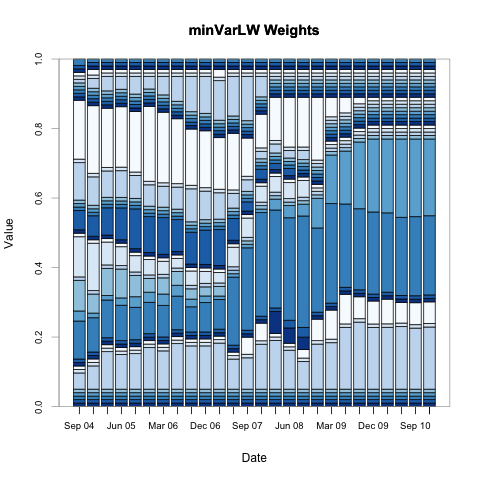
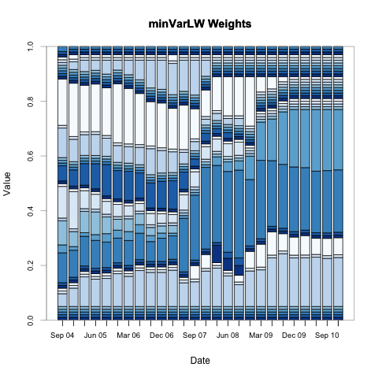
Error: could not find function "loadMethod"Compute the portfolio rebalancing returns and chart the performance.
ret.minVarSample <- summary(opt.minVarSample)$portfolio_returns
ret.minVarRobust <- summary(opt.minVarLW)$portfolio_returns
ret.minVar <- cbind(ret.minVarSample, ret.minVarRobust)
colnames(ret.minVar) <- c("Sample", "LW")
charts.PerformanceSummary(ret.minVar)Here we consider a portfolio of stocks. Our objective is to maximize portfolio return with a target of 0.0015 and minimize portfolio StdDev with a target of 0.02 subject to dollar neutral, beta, box, and position limit constraints. We will use the same data considered in Example 1.
portf.init <- portfolio.spec(stocks)
# Add constraint such that the portfolio weights sum to 0*
portf.dn <- add.constraint(portf.init, type="weight_sum",
min_sum=-0.01, max_sum=0.01)
# Add box constraint such that no asset can have a weight of greater than
# 20% or less than -20%
portf.dn <- add.constraint(portf.dn, type="box", min=-0.2, max=0.2)
# Add constraint such that we have at most 20 positions
portf.dn <- add.constraint(portf.dn, type="position_limit", max_pos=20)
# Compute the betas of each stock
betas <- t(CAPM.beta(equity.data, market, Rf))
# Add constraint such that the portfolio beta is between -0.25 and 0.25
portf.dn <- add.constraint(portf.dn, type="factor_exposure", B=betas,
lower=-0.25, upper=0.25)# Add objective to maximize portfolio return with a target of 0.0015
portf.dn.StdDev <- add.objective(portf.dn, type="return", name="mean",
target=0.0015)
# Add objective to minimize portfolio StdDev with a target of 0.02
portf.dn.StdDev <- add.objective(portf.dn.StdDev, type="risk", name="StdDev",
target=0.02)# Generate random portfolios
rp <- random_portfolios(portf.dn, 10000, "sample", eliminate=TRUE)
# Run the optimization
opt.dn <- optimize.portfolio(equity.data, portf.dn.StdDev,
optimize_method="random", rp=rp,
trace=TRUE)plot(opt.dn, main="Dollar Neutral Portfolio", risk.col="StdDev", neighbors=10)Here we will look at portfolio optimization in the context of portfolio of hedge funds.
R <- edhec[,c("Convertible.Arbitrage", "Equity.Market.Neutral",
"Fixed.Income.Arbitrage",
"CTA.Global", "Emerging.Markets", "Global.Macro")]
# Abreviate column names for convenience and plotting
colnames(R) <- c("CA", "EMN", "FIA", "CTAG", "EM", "GM")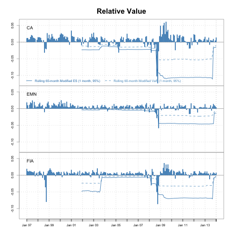 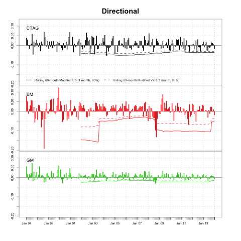
Consider an allocation to hedge funds using the EDHEC-Risk Alternative Index as a proxy. This will be an extended example starting with an objective to minimize modified expected shortfall, then add risk budget percent contribution limit, and finally add equal risk contribution limit.
Add risk budget objective to minimize concentration of percentage component contribution to risk. Concentration is defined as the Herfindahl Hirschman Index (HHI).
\[ \sum_{i=1}^n x_i^2 \]
# Specify an initial portfolio
funds <- colnames(R)
portf.init <- portfolio.spec(funds)
# Add constraint such that the weights sum to 1*
portf.init <- add.constraint(portf.init, type="weight_sum",
min_sum=0.99, max_sum=1.01)
# Add box constraint such that no asset can have a weight of greater than
# 40% or less than 5%
portf.init <- add.constraint(portf.init, type="box",
min=0.05, max=0.4)
# Add return objective with multiplier=0 such that the portfolio mean
# return is calculated, but does not impact optimization
portf.init <- add.objective(portf.init, type="return",
name="mean", multiplier=0)# Add objective to minimize expected shortfall
portf.minES <- add.objective(portf.init, type="risk", name="ES")
# Add objective to set upper bound on percentage component contribution
portf.minES.RB <- add.objective(portf.minES, type="risk_budget",
name="ES", max_prisk=0.3)
# Relax box constraints
portf.minES.RB$constraints[[2]]$max <- rep(1,ncol(R))
# Add objective to minimize concentration of modified ES
# component contribution
portf.minES.EqRB <- add.objective(portf.minES, type="risk_budget",
name="ES", min_concentration=TRUE)
# Relax box constraints
portf.minES.EqRB <- add.constraint(portf.minES.EqRB, type="box",
min=0.05, max=1, indexnum=2)# Combine the 3 portfolios
portf <- combine.portfolios(list(minES=portf.minES,
minES.RB=portf.minES.RB,
minES.EqRB=portf.minES.EqRB))
# Run the optimization
opt.minES <- optimize.portfolio(R, portf, optimize_method="DEoptim",
search_size=5000, trace=TRUE, traceDE=0)chart.RiskBudget(opt.minES[[2]], main="Risk Budget Limit",
risk.type="percentage", neighbors=10)
chart.RiskBudget(opt.minES[[3]], main="Equal ES Component Contribution",
risk.type="percentage", neighbors=10)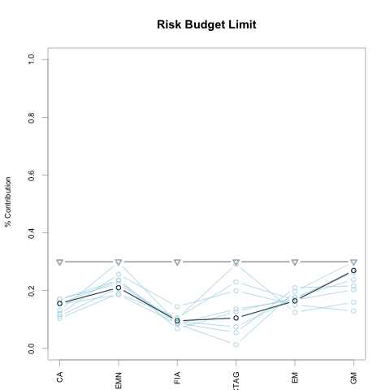 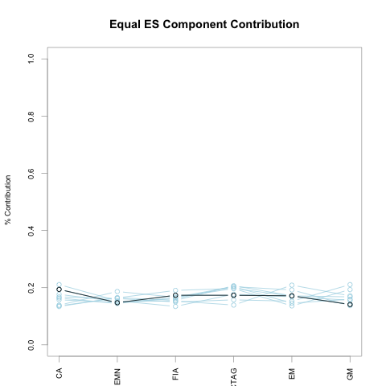
# Set rebalancing frequency
rebal.freq <- "quarters"
# Training Period
training <- 120
# Trailing Period
trailing <- 72
bt.opt.minES <- optimize.portfolio.rebalancing(R, portf,
optimize_method="DEoptim",
rebalance_on=rebal.freq,
training_period=training,
trailing_periods=trailing,
search_size=5000,
traceDE=0)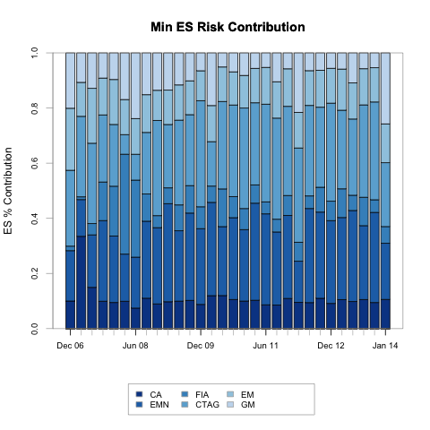 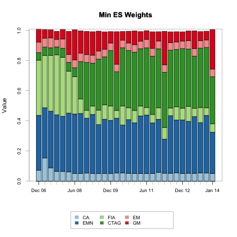
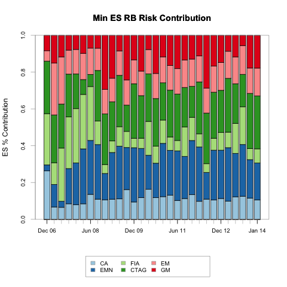 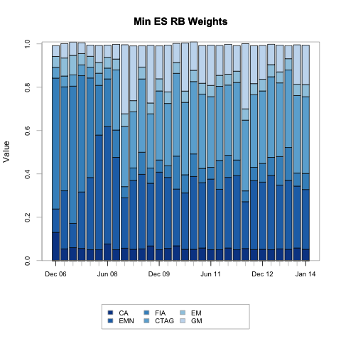
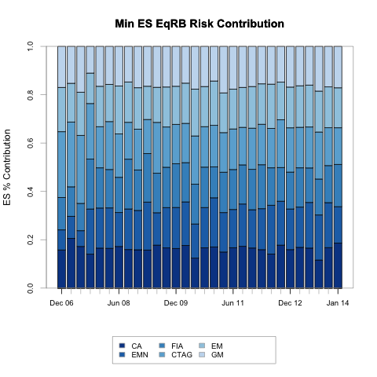 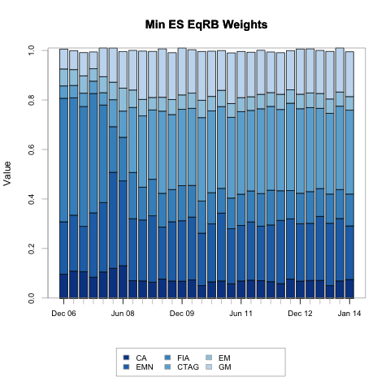
ret.bt.opt <- do.call(cbind, lapply(bt.opt.minES,
function(x) summary(x)$portfolio_returns))
colnames(ret.bt.opt) <- c("min ES", "min ES RB", "min ES Eq RB")
charts.PerformanceSummary(ret.bt.opt)Consider an allocation to hedge funds using the EDHEC-Risk Alternative Index as a proxy. Our objective to maximize the fourth order expansion of the Constant Relative Risk Aversion (CRRA) expected utility function as in the Boudt paper and Martinelli paper. We use the same data as Example 3.
\[ EU_{\lambda}(w) = - \frac{\lambda}{2} m_{(2)}(w) + \frac{\lambda (\lambda + 1)}{6} m_{(3)}(w) - \frac{\lambda (\lambda + 1) (\lambda + 2)}{24} m_{(4)}(w) \]
CRRA <- function(R, weights, lambda, sigma, m3, m4){
weights <- matrix(weights, ncol=1)
M2.w <- t(weights) %*% sigma %*% weights
M3.w <- t(weights) %*% m3 %*% (weights %x% weights)
M4.w <- t(weights) %*% m4 %*% (weights %x% weights %x% weights)
term1 <- (1 / 2) * lambda * M2.w
term2 <- (1 / 6) * lambda * (lambda + 1) * M3.w
term3 <- (1 / 24) * lambda * (lambda + 1) * (lambda + 2) * M4.w
out <- -term1 + term2 - term3
out
}# Specify portfolio
portf.crra <- portfolio.spec(funds)
# Add constraint such that the weights sum to 1
portf.crra <- add.constraint(portf.crra, type="weight_sum",
min_sum=0.99, max_sum=1.01)
# Add box constraint such that no asset can have a weight of greater than
# 40% or less than 5%
portf.crra <- add.constraint(portf.crra, type="box",
min=0.05, max=0.4)
# Add objective to maximize CRRA
portf.crra <- add.objective(portf.crra, type="return",
name="CRRA", arguments=list(lambda=10))
# I just want these for plotting
# Set multiplier=0 so that it is calculated, but does not affect the optimization
portf.crra <- add.objective(portf.crra, type="return", name="mean", multiplier=0)
portf.crra <- add.objective(portf.crra, type="risk", name="ES", multiplier=0)
portf.crra <- add.objective(portf.crra, type="risk", name="StdDev", multiplier=0)opt.crra <- optimize.portfolio(R, portf.crra, optimize_method="DEoptim",
search_size=5000, trace=TRUE, traceDE=0,
momentFUN="crra.moments")opt.crra## ***********************************
## PortfolioAnalytics Optimization
## ***********************************
##
## Call:
## optimize.portfolio(R = R, portfolio = portf.crra, optimize_method = "DEoptim",
## search_size = 5000, trace = TRUE, traceDE = 0, momentFUN = "crra.moments")
##
## Optimal Weights:
## CA EMN FIA CTAG EM GM
## 0.062 0.382 0.344 0.094 0.050 0.072
##
## Objective Measures:
## CRRA
## -0.0005303
##
##
## mean
## 0.005418
##
##
## ES
## 0.0307
##
##
## StdDev
## 0.009984chart.RiskReward(opt.crra, risk.col = "ES")
chart.RiskReward(opt.crra, risk.col = "StdDev")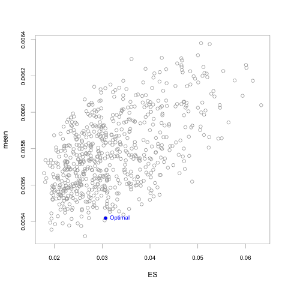 
bt.opt.crra <- optimize.portfolio.rebalancing(R, portf.crra,
optimize_method="DEoptim",
search_size=5000, trace=TRUE,
traceDE=0,
momentFUN="crra.moments",
rebalance_on=rebal.freq,
training_period=training,
trailing_periods=trailing)
ret.crra <- summary(bt.opt.crra)$portfolio_returns
colnames(ret.crra) <- "CRRA"charts.PerformanceSummary(cbind(ret.bt.opt, ret.crra),
main="Optimization Performance")TODO
Many thanks to